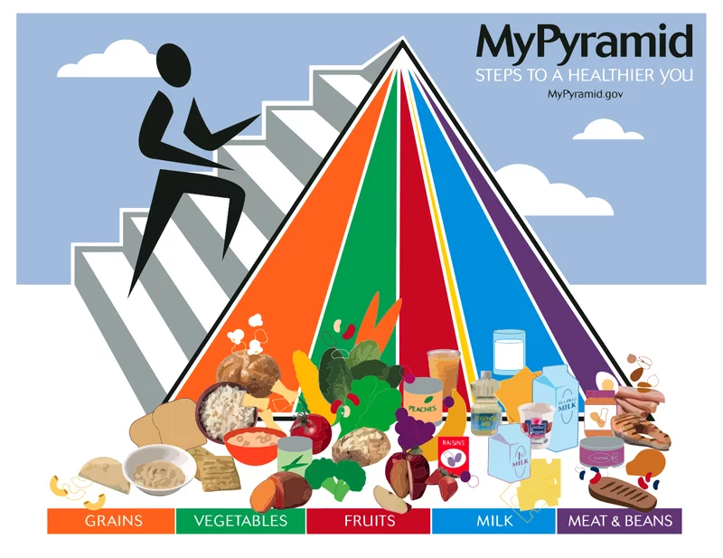

Good nutrition is the foundation of our health and well-being. In today's world, where many people face problems of overweight and various diseases related to unhealthy diet, the importance of this topic becomes even more important. Our body needs various nutrients: proteins, fats, vitamins and minerals. Each of these components plays a unique role. For example, proteins are the building blocks for cells and fats are essential for normal brain function. Therefore, it is important to include foods from all food groups in your diet. Eating regular meals is also important. Regular meals help to maintain stable blood sugar levels and prevent hunger, which can lead to overeating. It is optimal if a person eats 4-5 times a day in small portions. This allows the body to better absorb nutrients and maintain high energy levels. In addition, attention should be paid to the number of calories eaten. Excessive calorie intake can lead to overweight gain and related diseases such as diabetes and cardiovascular disease. Therefore, it is important to watch your portion sizes and choose less calorie-dense but nutritious foods. Good nutrition also includes avoiding bad habits. Consuming large amounts of sugar, salt and trans fats has a negative impact on health. Sweets, fast food and carbonated drinks may be tasty, but consuming them regularly can lead to serious health problems. Instead, it is better to choose healthy alternatives such as nuts, yogurts with no added sugar or homemade smoothies.
You are what you eat
No smoking please
Smoking is one of the most common bad habits that causes serious damage to human health. Even with numerous warnings from doctors and scientific studies, millions of people continue to smoke without realizing or ignoring all the consequences it can have on their bodies. First of all, smoking is a major cause of many chronic diseases. Tobacco smoke contains more than 7,000 chemicals, about 70 of which are carcinogenic. This means that they can cause cancer. The most common forms of cancer associated with smoking include cancers of the lungs, throat, mouth, and esophagus. According to the World Health Organization, smoking is responsible for about 80% of lung cancer cases, making it one of the most dangerous risk factors. Smoking also has a negative impact on the heart and vascular system. Nicotine and other substances in tobacco smoke help narrow blood vessels, raise blood pressure and increase the risk of cardiovascular diseases such as myocardial infarction and stroke. Smokers are several times more likely to experience these serious problems than non-smokers. It should not be forgotten that smoking has a negative impact not only on the health of the smoker, but also on the health of others. Passive smoking, i.e. inhalation of tobacco smoke by non-smokers, can also lead to serious diseases. Children exposed to tobacco smoke have an increased risk of developing asthma, allergies, and other health problems.
Keep stress under control
If you feel there is too much pressure on you, lose sleep and worry about tests and schoolwork, you’re not alone. Everyone experiences stress at times. Stress is the body’s way to react to a challenge and prepare to meet a difficult situation with strength. The human body responds to stress by activating the nervous system and specific hormones. These hormones speed up heart rate, breathing rate, blood pressure, and metabolism. All these prepare a person to react quickly and to handle the problem. This reaction is known as the stress response. It increases a person’s ability to perform well under pressure. However, it can also cause problems. Physical effects of stress can include headaches, insomnia, digestive problems and even heart disease. The psychological effects can be just as serious: anxiety, fear, irritability and reduced quality of life. It is important, then, to be able to identify the symptoms of stress and find ways to deal with it.
Sleep tight
←This is bob.
He never sleeps. But he has a valuable reason for that.
(He always build something)
And you often has no reason to stay awake at night
So, go sleep as early as possible
(But don't go too early because you can wake up too early)
New year is soon!
Did you knew, that tangerines(mandarines) can be harmful?
The optimal daily dose is four tangerines. More can lead to allergic reactions, abdominal bloating and exacerbation of gastrointestinal diseases. Specialists advise to eat mandarins in the morning and afternoon, before 17:00. Important - citrus fruits should not be eaten on an empty stomach!
Оправдания
У автора данной странички ещё мало опыта в создании сайтов.
Поэтому страница не идеальная, текст может заскакивать на картинки, кнопки не работают(мы еще не работали с джаваскриптом) и так далее.
Над этой страничкой ещё можно работать и работь, но у автора нет времени и мотивации.
Поставьте ему десятку пожалуйста🙏🙏🙏